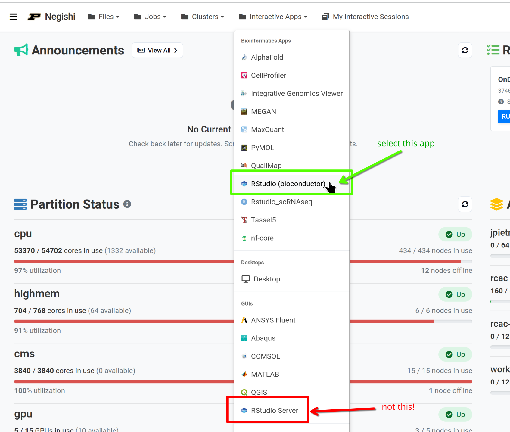

Summary and Setup
Welcome
This hands-on workshop teaches you how to analyze single-cell RNA sequencing (scRNA-seq) data from start to finish. You will work with a real 10x Genomics PBMC dataset on Purdue’s HPC clusters, progressing from raw FASTQ files through alignment, quality control, clustering, cell type annotation, multi-sample integration, and differential expression analysis.
Learning Outcomes
After completing this workshop, you will be able to:
- Process raw scRNA-seq data using Cell Ranger and STARsolo on an HPC cluster
- Perform quality control, normalization, and dimensionality reduction with Seurat v5 in R
- Identify cell types through marker gene analysis and automated annotation
- Integrate multiple samples, run differential expression analysis, and interpret pathway enrichment results
Getting Started
Please visit the Setup page for prerequisites, software installation, data access instructions, and the workshop schedule.
Instructors
Arun Seetharam: Arun is a Bioinformatics Scientist at Purdue’s Rosen Center for Advanced Computing (RCAC). He develops and delivers bioinformatics training workshops and provides research computing support for the Purdue community.
Michael Carlson, Ph.D.: Michael is a Senior Computational Scientist at Purdue University’s Rosen Center for Advanced Computing (RCAC). Michael has a background in computational physics, specifically hypersonic materials. He also leads many introductory workshops in the High-Performance Computing domain.
Workshop Schedule (4/21/2026)
| Time | Topic |
|---|---|
| 8:30 – 9:00 | Arrival & Setup |
| 9:00 – 9:20 | Episode 1: Introduction to Single-Cell RNA-Seq |
| 9:20 – 10:05 | Episode 2: Raw Data Processing |
| 10:05 – 10:20 | Break |
| 10:20 – 11:05 | Episode 3: Quality Control |
| 11:05 – 11:55 | Episode 4: Normalization and Feature Selection |
| 11:55 – 12:00 | Morning Recap |
| 12:00 – 1:00 | Lunch |
| 1:00 – 1:45 | Episode 5: Dimensionality Reduction and Clustering |
| 1:45 – 2:30 | Episode 6: Cell Type Annotation |
| 2:30 – 2:45 | Break |
| 2:45 – 3:25 | Episode 7: Multi-Sample Integration |
| 3:25 – 4:00 | Episode 8: Differential Expression & Wrap-up |
| 4:00 – 4:30 | Q&A / Feedback |
Prerequisites
This workshop assumes:
- Basic Linux/command-line skills: navigating directories, running commands, editing files
- Basic R skills: installing packages, reading/writing data, creating plots
- A Purdue HPC account: access to the Negishi cluster or Scholar (provided)
- An SSH client: terminal (macOS/Linux) or PuTTY/MobaXterm (Windows)
No prior experience with single-cell RNA-seq is required.
What is not covered
This workshop focuses on the core scRNA-seq analysis workflow. The following topics are not covered:
- Experimental design and sample preparation
- Other single-cell modalities (ATAC-seq, CITE-seq, spatial transcriptomics)
- Trajectory/pseudotime analysis (Monocle3, RNA velocity)
- Advanced doublet detection methods (DoubletFinder, scDblFinder)
- Generating your own Cell Ranger reference genomes
- Multi-modal data integration
SSH Setup
You need SSH access to the Negishi cluster for Episode 2 (raw data processing) and to copy the workshop data. Follow the instructions for your operating system below.
Connecting to the Cluster
You will need SSH access to the Negishi cluster at Purdue. Choose the instructions for your operating system below.
Data Setup
Copying Workshop Data
The workshop data is pre-staged on the cluster. Copy it to your scratch directory:
BASH
mkdir -p ${RCAC_SCRATCH}/scrna_workshop
rsync -avP /depot/workshop/data/scrna_workshop/ ${RCAC_SCRATCH}/scrna_workshop/This will copy:
-
FASTQ files:
fastq/pbmc_10k_v3_S1_L00{1,2}_R{1,2}_001.fastq.gz -
10x Reference:
reference/refdata-gex-GRCh38-2024-A/ -
Pre-computed count matrix:
filtered_feature_bc_matrix/(for episodes 3+) -
Pre-computed R objects:
rds/(optional, for jumping into later episodes)
Starting RStudio on Open OnDemand
For Episodes 3 to 8, we will use RStudio through Negishi’s Open OnDemand (OOD) web portal. Follow these steps to launch an RStudio session.
Step 1: Log in to Open OnDemand
Open your browser and navigate to gateway.negishi.rcac.purdue.edu. Complete the Purdue SSO login (BoilerKey/Duo with Microsoft authentication).
Step 2: Launch RStudio (Bioconductor)
From the top menu bar, click the Interactive Apps tab. Under the Bioinformatics Apps section, select RStudio (bioconductor).
Choose the correct app
Make sure you select RStudio (bioconductor) under Bioinformatics Apps — not the RStudio Server option listed under the GUIs section. The Bioconductor version includes pre-installed single-cell analysis packages that we need for this workshop.

R Package Installation (skip this section if using OOD)
The R packages are pre-installed on the cluster. If you need to install them locally:
R
# Install BiocManager if not already installed
if (!requireNamespace("BiocManager", quietly = TRUE))
install.packages("BiocManager")
# Core packages
install.packages("Seurat")
install.packages("tidyverse")
# Bioconductor packages
BiocManager::install(c(
"SingleR",
"celldex",
"clusterProfiler",
"org.Hs.eg.db",
"enrichplot"
))
# SeuratData for integration dataset
install.packages("remotes")
remotes::install_github("satijalab/seurat-data")